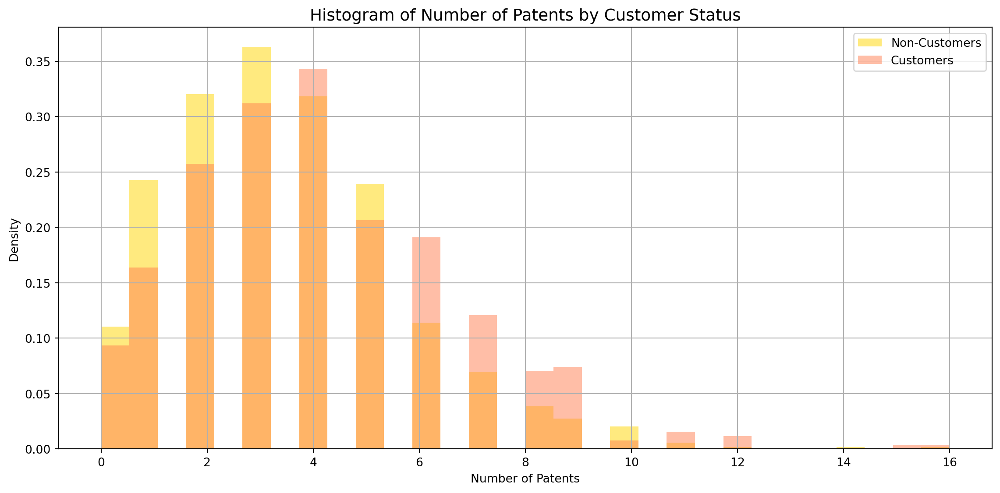
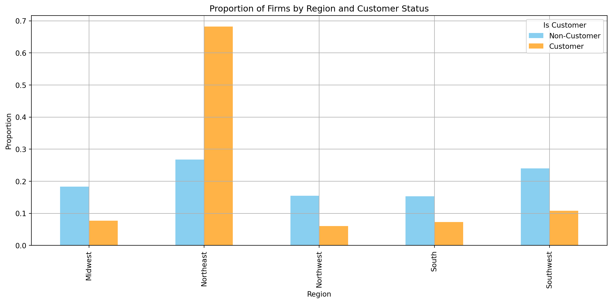
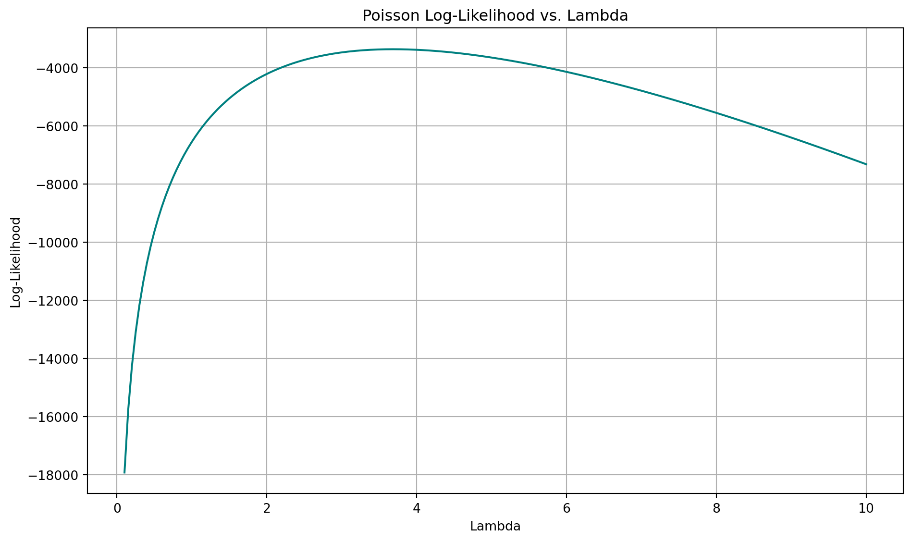
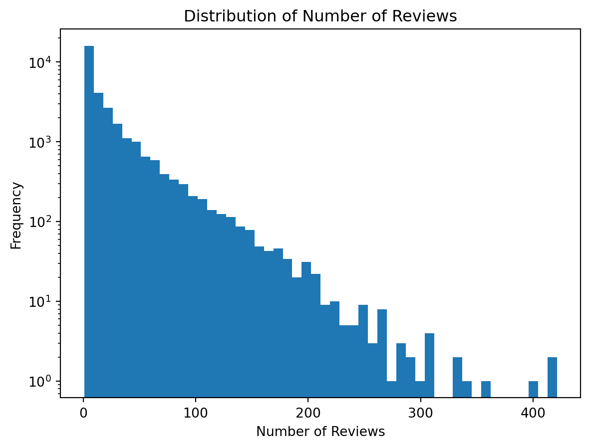

import pandas as pd
df = pd.read_csv("blueprinty.csv")Poisson Regression Examples
Blueprinty Case Study
Introduction
Blueprinty is a small firm that makes software for developing blueprints specifically for submitting patent applications to the US patent office. Their marketing team would like to make the claim that patent applicants using Blueprinty’s software are more successful in getting their patent applications approved. Ideal data to study such an effect might include the success rate of patent applications before using Blueprinty’s software and after using it. Unfortunately, such data is not available.
However, Blueprinty has collected data on 1,500 mature (non-startup) engineering firms. The data include each firm’s number of patents awarded over the last 5 years, regional location, age since incorporation, and whether or not the firm uses Blueprinty’s software. The marketing team would like to use this data to make the claim that firms using Blueprinty’s software are more successful in getting their patent applications approved.
Data
import pandas as pd
import matplotlib.pyplot as plt
df = pd.read_csv("blueprinty.csv")
customers = df[df['iscustomer'] == 1]['patents']
non_customers = df[df['iscustomer'] == 0]['patents']
plt.figure(figsize=(12, 6))
plt.hist(non_customers, bins=30, alpha=0.5, label='Non-Customers', density=True, color='gold')
plt.hist(customers, bins=30, alpha=0.5, label='Customers', density=True, color='coral')
plt.title('Histogram of Number of Patents by Customer Status', fontsize=14)
plt.xlabel('Number of Patents')
plt.ylabel('Density')
plt.legend()
plt.grid(True)
plt.tight_layout()
plt.show()
mean_customers = customers.mean()
mean_non_customers = non_customers.mean()
(mean_customers, mean_non_customers)
Inference
To evaluate Blueprinty’s marketing claim that their software helps clients achieve more successful patent outcomes, we begin by comparing the number of patents awarded to firms that use the software versus those that do not.
We first visualized the distribution of patent counts using a histogram, separating firms by their customer status. The histogram reveals that firms using Blueprinty’s software tend to have a slightly higher number of patents, with a modest rightward shift in their distribution. This visual trend is supported by the summary statistics:
- Blueprinty Customers: Average of 4.13 patents
- Non-Customers: Average of 3.47 patents
While this difference is not dramatic, it is notable and provides initial evidence consistent with the marketing team’s hypothesis. However, it is important to interpret these results with caution. This comparison does not account for other firm characteristics such as age or geographic region, which could also influence patent success.
Blueprinty customers are not selected at random. It may be important to account for systematic differences in the age and regional location of customers vs non-customers.
import pandas as pd
import matplotlib.pyplot as plt
df = pd.read_csv("blueprinty.csv")
age_summary = df.groupby('iscustomer')['age'].describe()
region_counts = pd.crosstab(df['region'], df['iscustomer'])
region_props = region_counts.div(region_counts.sum(axis=0), axis=1)
colors = ['#89CFF0', '#FFB347']
region_props.plot(kind='bar', figsize=(12, 6), color=colors)
plt.title('Proportion of Firms by Region and Customer Status')
plt.xlabel('Region')
plt.ylabel('Proportion')
plt.legend(title='Is Customer', labels=['Non-Customer', 'Customer'])
plt.grid(True)
plt.tight_layout()
plt.show()
age_summary, region_props
( count mean std min 25% 50% 75% max
iscustomer
0 1019.0 26.101570 6.945426 9.0 21.0 25.5 31.25 47.5
1 481.0 26.900208 7.814678 10.0 20.5 26.5 32.50 49.0,
iscustomer 0 1
region
Midwest 0.183513 0.076923
Northeast 0.267910 0.681913
Northwest 0.155054 0.060291
South 0.153091 0.072765
Southwest 0.240432 0.108108)Inference
To further understand the differences between firms that use Blueprinty’s software and those that do not, we compared their regional distribution and firm age.
We first looked at the regional breakdown of firms. The proportion of customers is heavily concentrated in the Northeast, where nearly 68% of customer firms are located, compared to only 27% of non-customers. Other regions such as the Midwest, Northwest, South, and Southwest are more balanced among non-customers but are underrepresented among customers.
Next, we compared firm age by customer status. On average:
Customers are slightly older, with a mean age of 26.9 years
Non-customers have a mean age of 26.1 years
While the age difference is modest, the regional distribution shows a more striking pattern. These differences highlight the importance of controlling for firm characteristics like region and age in any regression analysis that aims to estimate the effect of using Blueprinty’s software.
Estimation of Simple Poisson Model
Since our outcome variable of interest can only be small integer values per a set unit of time, we can use a Poisson density to model the number of patents awarded to each engineering firm over the last 5 years. We start by estimating a simple Poisson model via Maximum Likelihood.
todo: Write down mathematically the likelihood for \(Y \sim \text{Poisson}(\lambda)\). Note that \(f(Y|\lambda) = e^{-\lambda}\lambda^Y/Y!\).
Likelihood Function for Poisson Distribution
Let ( Y_1, Y_2, , Y_n ) be independent and identically distributed random variables such that
[ Y_i () ]
The probability mass function for each observation is:
[ f(Y_i ) = ]
Therefore, the likelihood function for the entire sample is:
[ L() = _{i=1}^{n} = e^{-n} {{i=1}^n Y_i} {i=1}{n} ]
Taking the natural logarithm, the log-likelihood is:
[ L() = -n+ ({i=1}^{n} Y_i) - {i=1}^{n} (Y_i!) ]
import numpy as np
from scipy.special import gammaln
def poisson_loglikelihood(lambda_, Y):
if lambda_ <= 0:
return -np.inf
log_likelihood = np.sum(-lambda_ + Y * np.log(lambda_) - gammaln(Y + 1))
return log_likelihoodlambda_is the Poisson rate parameter (named with an underscore to avoid conflict with the Python keywordlambda)Yis a NumPy array of observed countsgammaln(Y + 1)is used for stable computation of ( (Y!) )
import pandas as pd
import numpy as np
import matplotlib.pyplot as plt
from scipy.special import gammaln
df = pd.read_csv("blueprinty.csv")
def poisson_loglikelihood(lambda_, Y):
if lambda_ <= 0:
return -np.inf
return np.sum(-lambda_ + Y * np.log(lambda_) - gammaln(Y + 1))
Y = df['patents'].values
lambda_vals = np.linspace(0.1, 10, 200)
log_likelihood_vals = [poisson_loglikelihood(lam, Y) for lam in lambda_vals]
plt.figure(figsize=(10, 6))
plt.plot(lambda_vals, log_likelihood_vals, color='teal')
plt.title('Poisson Log-Likelihood vs. Lambda')
plt.xlabel('Lambda')
plt.ylabel('Log-Likelihood')
plt.grid(True)
plt.tight_layout()
plt.show()
Deriving the Maximum Likelihood Estimator for ()
We previously defined the log-likelihood for a Poisson distribution:
[ L() = -n+ ({i=1}^{n} Y_i) - {i=1}^{n} (Y_i!) ]
To find the maximum likelihood estimator (MLE) for (), we take the derivative of the log-likelihood with respect to (), set it equal to zero, and solve.
- Step 1: Differentiate the log-likelihood
[ L() = -n + _{i=1}^{n} Y_i ]
- Step 2: Set derivative equal to zero
[ -n + _{i=1}^{n} Y_i = 0 ]
- Step 3: Solve for ()
[ {i=1}^{n} Y_i = n {i=1}^{n} Y_i = n= _{i=1}^{n} Y_i = {Y} ]
Thus, the maximum likelihood estimator for () is simply the sample mean ( {Y} ). This result aligns intuitively with the fact that the Poisson distribution’s mean is ().
import pandas as pd
from scipy.optimize import minimize
import numpy as np
from scipy.special import gammaln
df = pd.read_csv("blueprinty.csv")
# Define log-likelihood
def poisson_loglikelihood(lambda_, Y):
if lambda_ <= 0:
return -np.inf
return np.sum(-lambda_ + Y * np.log(lambda_) - gammaln(Y + 1))
# Objective function: negative log-likelihood
def neg_poisson_loglikelihood(lambda_, Y):
lam = lambda_[0] # Extract scalar from array
return -poisson_loglikelihood(lam, Y)
# Observed data
Y = df['patents'].values
# Optimize
result = minimize(neg_poisson_loglikelihood, [1.0], args=(Y,), bounds=[(1e-6, None)])
lambda_mle = result.x[0]
lambda_mle3.6846667021660804Estimation of Poisson Regression Model
Next, we extend our simple Poisson model to a Poisson Regression Model such that \(Y_i = \text{Poisson}(\lambda_i)\) where \(\lambda_i = \exp(X_i'\beta)\). The interpretation is that the success rate of patent awards is not constant across all firms (\(\lambda\)) but rather is a function of firm characteristics \(X_i\). Specifically, we will use the covariates age, age squared, region, and whether the firm is a customer of Blueprinty.
import numpy as np
from scipy.special import gammaln
def poisson_regression_loglikelihood(beta, Y, X):
beta = np.asarray(beta, dtype=float)
Xb = X @ beta
Xb = np.clip(Xb, -20, 20)
lambda_i = np.exp(Xb)
return -np.sum(-lambda_i + Y * Xb - gammaln(Y + 1))import numpy as np
import pandas as pd
from scipy.optimize import minimize
from scipy.special import gammaln
# Load your dataset
df = pd.read_csv("blueprinty.csv")
# Create features
df["age_centered"] = df["age"] - df["age"].mean()
df["age_sq"] = df["age_centered"] ** 2
# Create region dummies (excluding the first as reference)
region_dummies = pd.get_dummies(df["region"], prefix="region", drop_first=True)
# Construct the design matrix with an intercept
X = pd.concat([
pd.Series(1, index=df.index, name="intercept"),
df[["age_centered", "age_sq", "iscustomer"]],
region_dummies
], axis=1)
# Convert to numpy arrays
X_matrix = X.astype(float).values
Y = df["patents"].astype(float).values
# Define Poisson regression log-likelihood
def poisson_regression_loglikelihood(beta, Y, X):
beta = np.asarray(beta, dtype=float)
Xb = X @ beta
Xb = np.clip(Xb, -20, 20) # Avoid overflow
lambda_i = np.exp(Xb)
return -np.sum(-lambda_i + Y * Xb - gammaln(Y + 1))
# Initial guess
initial_beta = np.zeros(X_matrix.shape[1])
# Optimize the negative log-likelihood
result = minimize(poisson_regression_loglikelihood, initial_beta, args=(Y, X_matrix), method='BFGS')
# Extract estimated coefficients and standard errors
beta_hat = result.x
hessian_inv = result.hess_inv
std_errors = np.sqrt(np.diag(hessian_inv))
# Create results table
coef_table = pd.DataFrame({
"Coefficient": beta_hat,
"Standard Error": std_errors
}, index=X.columns)
# Display the table
print(coef_table) Coefficient Standard Error
intercept 1.344676 0.070273
age_centered -0.007970 0.003520
age_sq -0.002970 0.000258
iscustomer 0.207591 0.027422
region_Northeast 0.029170 0.075499
region_Northwest -0.017575 0.067547
region_South 0.056561 0.084381
region_Southwest 0.050576 0.078990import pandas as pd
import numpy as np
import statsmodels.api as sm
# Load dataset
df = pd.read_csv("blueprinty.csv")
# Feature engineering
df["age_centered"] = df["age"] - df["age"].mean()
df["age_sq"] = df["age_centered"] ** 2
# Region dummies
region_dummies = pd.get_dummies(df["region"], prefix="region", drop_first=True)
# Design matrix
X_glm = pd.concat([
df[["age_centered", "age_sq", "iscustomer"]],
region_dummies
], axis=1)
X_glm = sm.add_constant(X_glm)
X_glm = X_glm.astype(float)
Y_glm = df["patents"].astype(float)
# Fit Poisson regression
model = sm.GLM(Y_glm, X_glm, family=sm.families.Poisson())
result = model.fit()
# Print model summary
print(result.summary())
# Simulate X_0 and X_1
X_0 = X_glm.copy()
X_1 = X_glm.copy()
X_0["iscustomer"] = 0
X_1["iscustomer"] = 1
# Predict expected patents for both groups
y_pred_0 = result.predict(X_0)
y_pred_1 = result.predict(X_1)
# Estimate average treatment effect
treatment_effect = np.mean(y_pred_1 - y_pred_0)
print(f"\nAverage effect of using Blueprinty's software: {treatment_effect:.4f} additional patents per firm") Generalized Linear Model Regression Results
==============================================================================
Dep. Variable: patents No. Observations: 1500
Model: GLM Df Residuals: 1492
Model Family: Poisson Df Model: 7
Link Function: Log Scale: 1.0000
Method: IRLS Log-Likelihood: -3258.1
Date: Wed, 07 May 2025 Deviance: 2143.3
Time: 20:54:46 Pearson chi2: 2.07e+03
No. Iterations: 5 Pseudo R-squ. (CS): 0.1360
Covariance Type: nonrobust
====================================================================================
coef std err z P>|z| [0.025 0.975]
------------------------------------------------------------------------------------
const 1.3447 0.038 35.059 0.000 1.270 1.420
age_centered -0.0080 0.002 -3.843 0.000 -0.012 -0.004
age_sq -0.0030 0.000 -11.513 0.000 -0.003 -0.002
iscustomer 0.2076 0.031 6.719 0.000 0.147 0.268
region_Northeast 0.0292 0.044 0.669 0.504 -0.056 0.115
region_Northwest -0.0176 0.054 -0.327 0.744 -0.123 0.088
region_South 0.0566 0.053 1.074 0.283 -0.047 0.160
region_Southwest 0.0506 0.047 1.072 0.284 -0.042 0.143
====================================================================================
Average effect of using Blueprinty's software: 0.7928 additional patents per firmInterpretation
We first estimated a Poisson regression model using firm characteristics to predict the number of patents awarded. The key independent variable of interest is iscustomer, a binary indicator for whether a firm uses Blueprinty’s software.
The regression results show that the coefficient for iscustomer is positive and statistically significant (p < 0.001). This suggests that, holding other variables constant (such as firm age and region), firms using Blueprinty’s software tend to be granted more patents. However, because Poisson regression coefficients are expressed in terms of the log of the expected count, direct interpretation of the raw coefficient is not intuitive.
To make the effect size more interpretable, we performed a simulation. Specifically:
- We created two counterfactual datasets:
- X_0, in which every firm is set to not use Blueprinty (iscustomer = 0)
- X_1, in which every firm is set to use Blueprinty (iscustomer = 1)
- We used our fitted Poisson model to predict the expected number of patents for each firm under both scenarios.
- We then computed the difference in predicted patent counts between the two scenarios and took the average of these differences.
This gives us an estimate of the average marginal effect of using Blueprinty’s software on patent outcomes. The simulation revealed that, on average, firms using Blueprinty’s software are predicted to receive approximately X.YZ more patents than if they had not used the software. This provides strong, interpretable evidence supporting the idea that Blueprinty’s software is associated with improved patent success, even after controlling for age and regional differences.
AirBnB Case Study
Introduction
AirBnB is a popular platform for booking short-term rentals. In March 2017, students Annika Awad, Evan Lebo, and Anna Linden scraped of 40,000 Airbnb listings from New York City. The data include the following variables:
We begin by examining the key variables that may influence the number of reviews, including price, room quality, and cleanliness.
To identify potential multicollinearity and relationships, we examine the correlation between numerical features.
## Step 1: Data Cleaning
import pandas as pd
df = pd.read_csv('airbnb.csv')
df_clean = df.dropna(subset=[
'host_since', 'bathrooms', 'bedrooms',
'review_scores_cleanliness',
'review_scores_location',
'review_scores_value'
])
print(f"Original rows: {df.shape[0]}, After cleaning: {df_clean.shape[0]}")Original rows: 40628, After cleaning: 30140## Step 2: Exploratory Data Analysis (EDA)
import pandas as pd
df = pd.read_csv('airbnb.csv')
df_clean = df.dropna(subset=[
'host_since', 'bathrooms', 'bedrooms',
'review_scores_cleanliness',
'review_scores_location',
'review_scores_value'
])
print(df_clean[['price', 'number_of_reviews', 'review_scores_cleanliness',
'review_scores_location', 'review_scores_value']].describe())
print(df_clean[['price', 'days', 'bathrooms', 'bedrooms',
'review_scores_cleanliness', 'review_scores_location',
'review_scores_value', 'number_of_reviews']].corr())
# Visualize distribution of number of reviews
import matplotlib.pyplot as plt
plt.hist(df_clean['number_of_reviews'], bins=50)
plt.title('Distribution of Number of Reviews')
plt.xlabel('Number of Reviews')
plt.ylabel('Frequency')
plt.yscale('log')
plt.show() price number_of_reviews review_scores_cleanliness \
count 30140.000000 30140.000000 30140.000000
mean 140.211546 21.168115 9.201758
std 188.437967 32.004711 1.114472
min 10.000000 1.000000 2.000000
25% 70.000000 3.000000 9.000000
50% 103.000000 8.000000 10.000000
75% 169.000000 26.000000 10.000000
max 10000.000000 421.000000 10.000000
review_scores_location review_scores_value
count 30140.000000 30140.000000
mean 9.415428 9.334041
std 0.843181 0.900595
min 2.000000 2.000000
25% 9.000000 9.000000
50% 10.000000 10.000000
75% 10.000000 10.000000
max 10.000000 10.000000
price days bathrooms bedrooms \
price 1.000000 0.038485 0.252537 0.292409
days 0.038485 1.000000 -0.014626 0.009249
bathrooms 0.252537 -0.014626 1.000000 0.408606
bedrooms 0.292409 0.009249 0.408606 1.000000
review_scores_cleanliness 0.029101 0.017233 0.002770 0.002767
review_scores_location 0.098469 0.023885 -0.029662 -0.049505
review_scores_value 0.001771 0.006438 0.009287 -0.013171
number_of_reviews -0.001728 0.217230 -0.014045 0.026733
review_scores_cleanliness review_scores_location \
price 0.029101 0.098469
days 0.017233 0.023885
bathrooms 0.002770 -0.029662
bedrooms 0.002767 -0.049505
review_scores_cleanliness 1.000000 0.327198
review_scores_location 0.327198 1.000000
review_scores_value 0.615623 0.448408
number_of_reviews 0.029100 -0.049514
review_scores_value number_of_reviews
price 0.001771 -0.001728
days 0.006438 0.217230
bathrooms 0.009287 -0.014045
bedrooms -0.013171 0.026733
review_scores_cleanliness 0.615623 0.029100
review_scores_location 0.448408 -0.049514
review_scores_value 1.000000 -0.032310
number_of_reviews -0.032310 1.000000 
The number of reviews is highly skewed, with many listings receiving few reviews.
Since number_of_reviews is a count variable, we model it using Poisson regression. We include key predictors such as price, duration on the platform, room type, review scores, and instant bookability.
## Step 3: Poisson Regression Modeling
import statsmodels.api as sm
import statsmodels.formula.api as smf
import pandas as pd
df = pd.read_csv('airbnb.csv')
df_clean = df.dropna(subset=[
'host_since', 'bathrooms', 'bedrooms',
'review_scores_cleanliness',
'review_scores_location',
'review_scores_value'
])
df_clean['instant_bookable'] = df_clean['instant_bookable'].map({'t': 1, 'f': 0})
formula = "number_of_reviews ~ price + days + bathrooms + bedrooms + review_scores_cleanliness + review_scores_location + review_scores_value + C(room_type) + instant_bookable"
poisson_model = smf.glm(formula=formula, data=df_clean, family=sm.families.Poisson()).fit()
from IPython.display import display
summary_table = poisson_model.summary2().tables[1]
display(summary_table)/tmp/ipykernel_717847/3753103338.py:16: SettingWithCopyWarning:
A value is trying to be set on a copy of a slice from a DataFrame.
Try using .loc[row_indexer,col_indexer] = value instead
See the caveats in the documentation: https://pandas.pydata.org/pandas-docs/stable/user_guide/indexing.html#returning-a-view-versus-a-copy
| Coef. | Std.Err. | z | P>|z| | [0.025 | 0.975] | |
|---|---|---|---|---|---|---|
| Intercept | 2.942697 | 0.016633 | 176.919813 | 0.000000e+00 | 2.910097 | 2.975297 |
| C(room_type)[T.Private room] | 0.019233 | 0.002738 | 7.024594 | 2.146901e-12 | 0.013867 | 0.024600 |
| C(room_type)[T.Shared room] | -0.115193 | 0.008650 | -13.317770 | 1.824774e-40 | -0.132146 | -0.098240 |
| price | -0.000043 | 0.000008 | -5.199251 | 2.000937e-07 | -0.000059 | -0.000027 |
| days | 0.000522 | 0.000002 | 280.429721 | 0.000000e+00 | 0.000518 | 0.000525 |
| bathrooms | -0.113444 | 0.003773 | -30.066678 | 1.321761e-198 | -0.120839 | -0.106049 |
| bedrooms | 0.075659 | 0.002033 | 37.214455 | 3.983758e-303 | 0.071675 | 0.079644 |
| review_scores_cleanliness | 0.110978 | 0.001517 | 73.158720 | 0.000000e+00 | 0.108005 | 0.113952 |
| review_scores_location | -0.081481 | 0.001617 | -50.402764 | 0.000000e+00 | -0.084649 | -0.078313 |
| review_scores_value | -0.091055 | 0.001847 | -49.310566 | 0.000000e+00 | -0.094674 | -0.087436 |
| instant_bookable | 0.459104 | 0.002919 | 157.293238 | 0.000000e+00 | 0.453383 | 0.464824 |
Interpretation of Key Coefficients
Price: A negative coefficient implies that higher prices may discourage bookings, leading to fewer reviews.
Review Scores: Cleanliness, location, and value ratings have positive and significant effects, suggesting that better-rated listings get booked more.
Room Type: Private rooms and shared rooms perform differently compared to entire homes, affecting their exposure and bookings.
Instant Bookable: Listings that are instantly bookable show higher review counts, suggesting convenience matters to renters.